Fase 02
Fase 2 - Diseño del Sistema
Modelo de datos, normalización, UML, flujos y mockups de interfaz.
Objetivo
Objetivo de la fase
Transformar los requisitos en una arquitectura de datos, clases y pantallas lista para implementar.
Desarrollo
Desarrollo del trabajo realizado
FASE 2) DISEÑO DEL SISTEMA
1. DISEÑO DE LA BASE DE DATOS
1.1 Modelo conceptual
1.2 Modelo lógico
1.3 Modelo físico:
1.4 Normalización (hasta 3FN)
1FN
• Todos los campos son atómicos (sin listas ni valores repetidos)
2FN
• Todas las tablas tienen clave primaria
• No hay dependencias parciales
3FN
• No existen dependencias transitivas:
o categoría separada de producto
o proveedor separado de producto
o usuario independiente del resto
Resultado: base de datos en 3FN correcta
2. UML DE CLASES
3. DIAGRAMAS DE FLUJO
3.1 Alta de producto 3.2 Eliminar producto 3.3 Modificar producto
Mockup de la interfaz gráfica:
Pantalla de inicio:
Pantallas de gestión (productos, clientes y proveedores):
1. DISEÑO DE LA BASE DE DATOS
1.1 Modelo conceptual
1.2 Modelo lógico
1.3 Modelo físico:
1.4 Normalización (hasta 3FN)
1FN
• Todos los campos son atómicos (sin listas ni valores repetidos)
2FN
• Todas las tablas tienen clave primaria
• No hay dependencias parciales
3FN
• No existen dependencias transitivas:
o categoría separada de producto
o proveedor separado de producto
o usuario independiente del resto
Resultado: base de datos en 3FN correcta
2. UML DE CLASES
3. DIAGRAMAS DE FLUJO
3.1 Alta de producto 3.2 Eliminar producto 3.3 Modificar producto
Mockup de la interfaz gráfica:
Pantalla de inicio:
Pantallas de gestión (productos, clientes y proveedores):
Decisiones
Decisiones técnicas tomadas
- La base de datos se normaliza hasta tercera forma normal para reducir duplicidades.
- Se definen entidades independientes para usuarios, clientes, productos, categorias, proveedores y pedidos.
- Los diagramas de flujo cubren altas, modificaciones y eliminaciones de productos.
- Los mockups anticipan una interfaz de gestion por modulos con tablas y acciones rapidas.
Resultados
Resultados obtenidos
- Modelo conceptual, logico y fisico de la base de datos.
- Script SQL documentado con tablas, claves primarias y relaciones.
- Diagrama UML de clases principales.
- Mockups de panel, productos, clientes y proveedores.
Evidencias
Galeria de capturas
{kind=link}
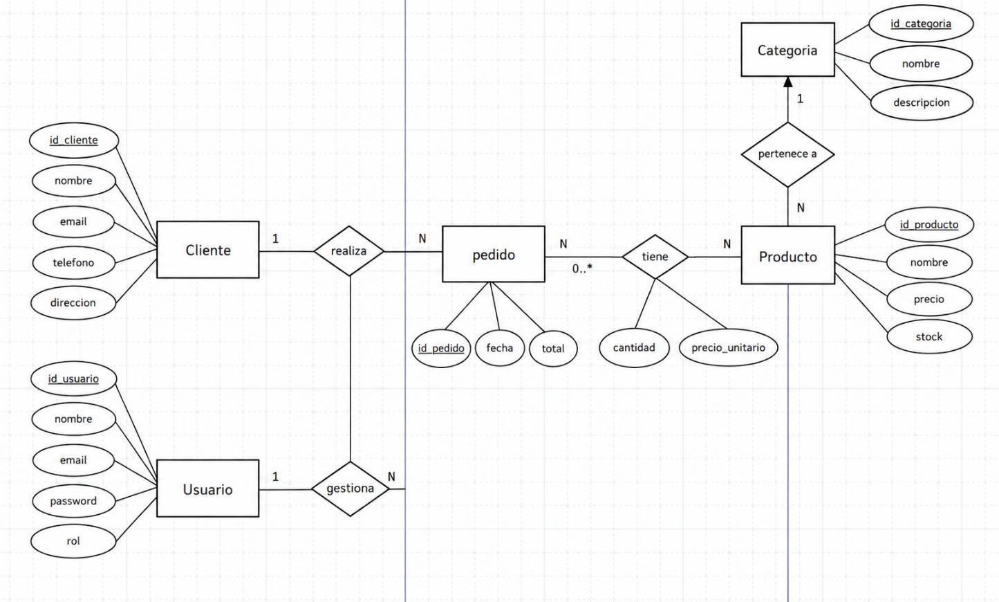
Modelo conceptual entidad-relacion de LevelUp Arcade. Modelo logico con tablas y relaciones principales.
Modelo logico con tablas y relaciones principales.
{kind=link}
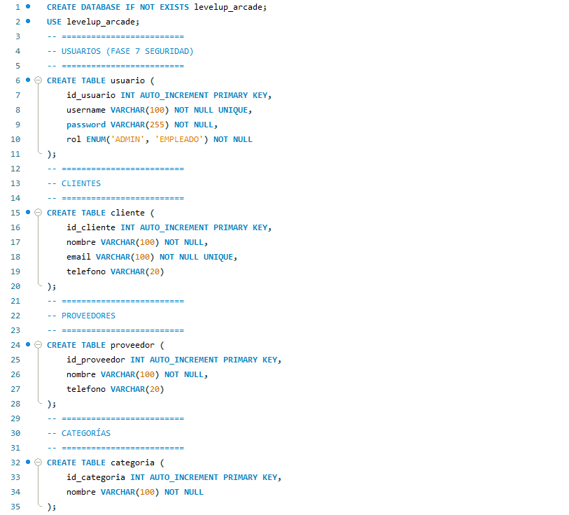
Script SQL del modelo fisico, primera parte.{kind=link}
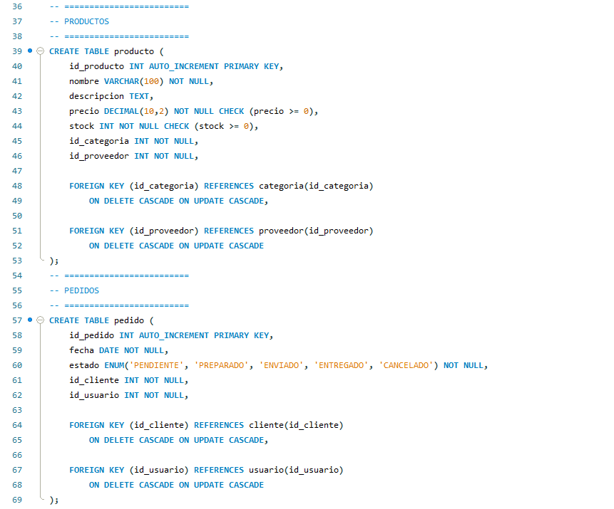
Script SQL del modelo fisico, segunda parte.{kind=link}
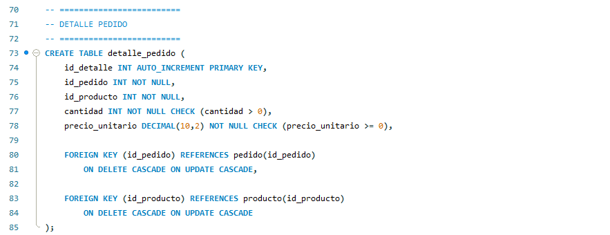
Script SQL con claves y relaciones finales.{kind=link}
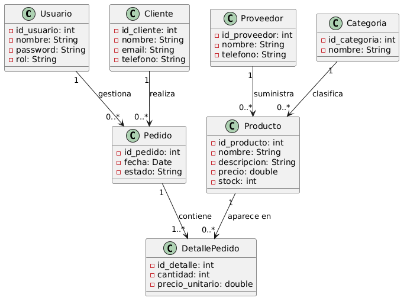
Diagrama UML de clases del sistema.{kind=link}
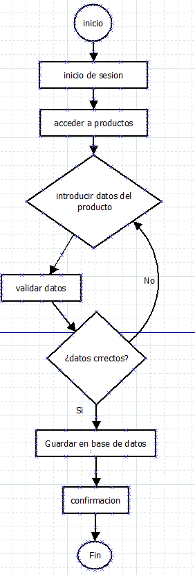
Diagrama de flujo para alta de producto.{kind=link}
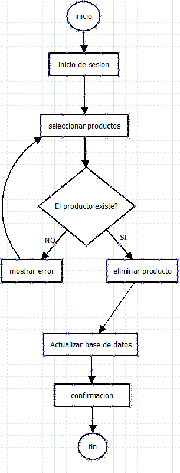
Diagrama de flujo para eliminar producto.{kind=link}
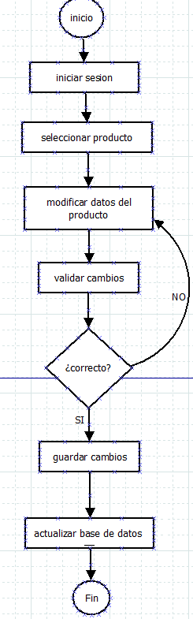
Diagrama de flujo para modificar producto.{kind=link}
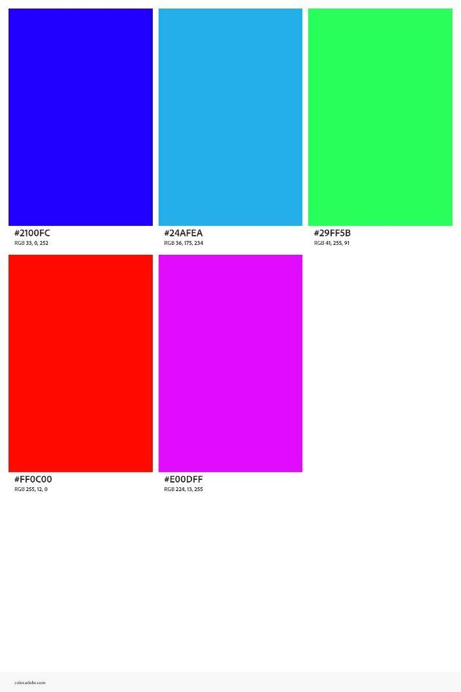
Exploracion visual inicial para la interfaz.{kind=link}
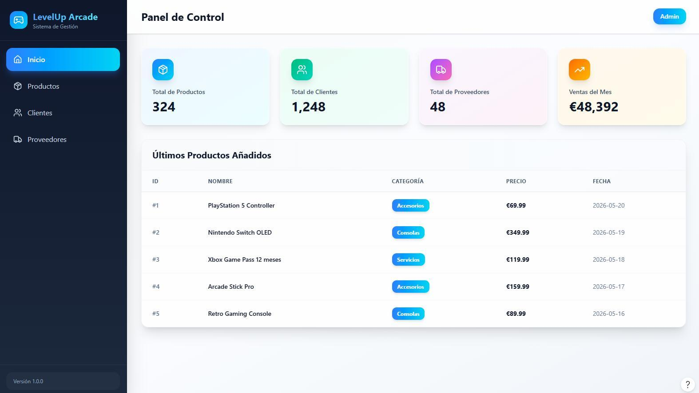
Mockup del panel de control.{kind=link}
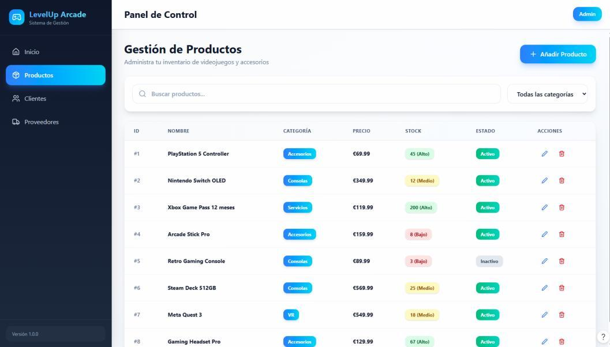
Mockup de gestion de productos.{kind=link}
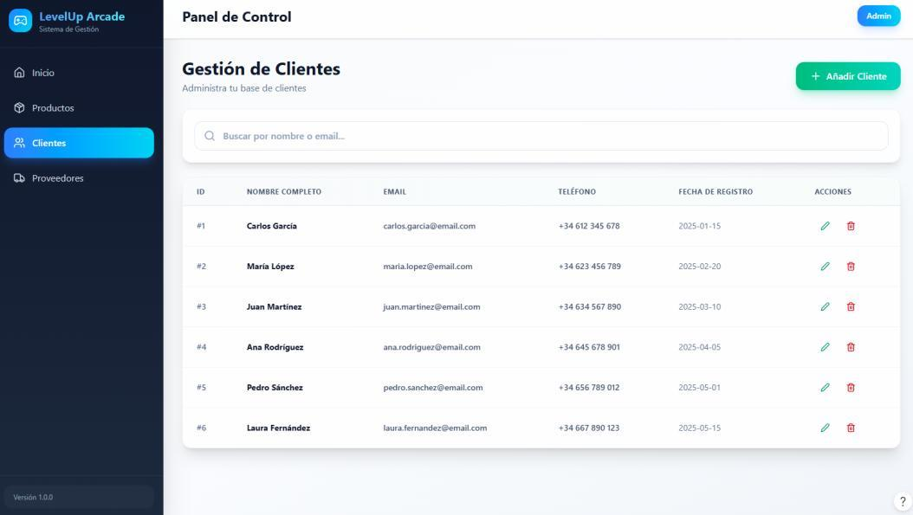
Mockup de gestion de clientes.{kind=link}
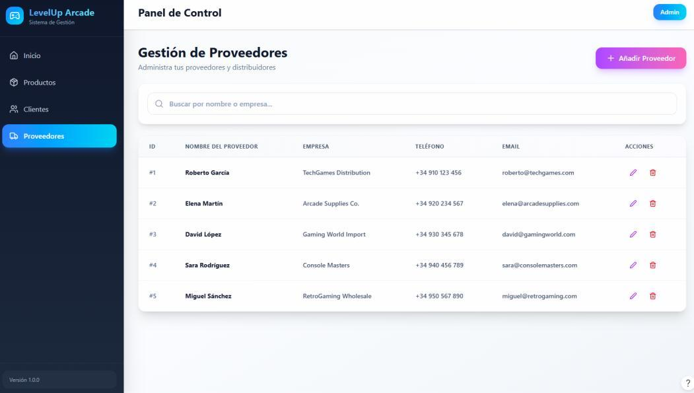
Mockup de gestion de proveedores.